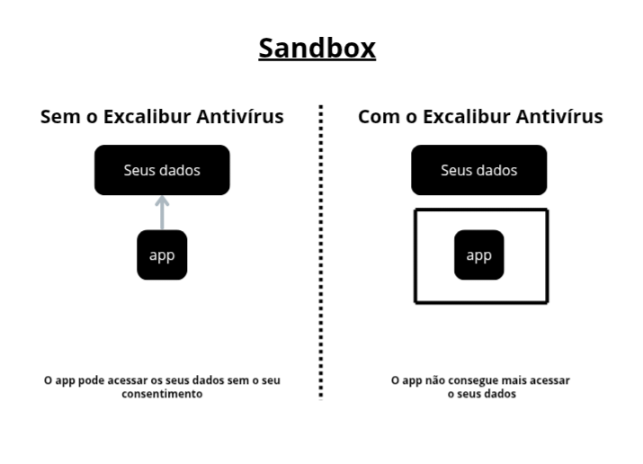
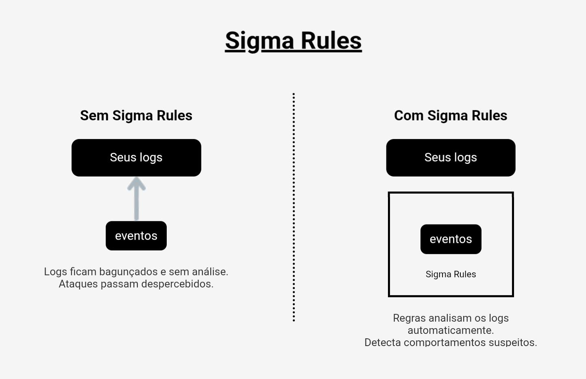
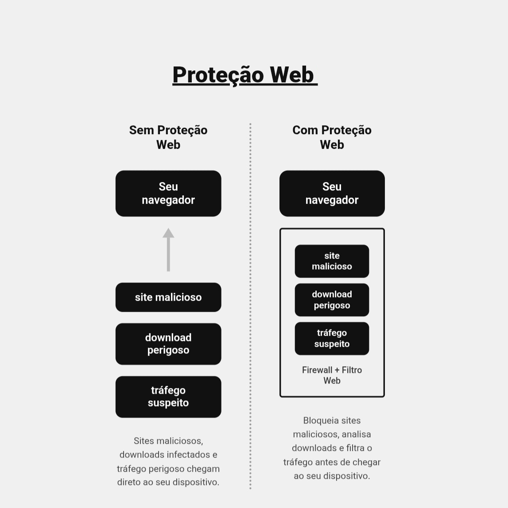

Como Funciona o Excalibur Antivirus
Veja como o Excalibur Antivirus protege o sistema de forma eficiente:
1. Sandbox
O sandbox é um ambiente isolado onde programas suspeitos são executados com segurança, impedindo que ameaças afetem o sistema principal durante a análise.
- Arquivos desconhecidos são executados em ambiente virtual separado antes de qualquer acesso ao sistema real.
- Vírus e malware rodando no sandbox não conseguem infectar o sistema.
- Eficaz contra ataques zero-day, detectando comportamento malicioso mesmo sem assinatura conhecida.
- Ransomwares são bloqueados antes de conseguirem criptografar arquivos do usuário.
- O processo ocorre em segundo plano, sem interferir no uso normal do computador.
- Múltiplos arquivos podem ser analisados simultaneamente em ambientes separados.
- Após a análise, o Excalibur aprova ou bloqueia o arquivo automaticamente.

2. Banco de Assinaturas
O antivírus possui um banco de dados com registros de ameaças conhecidas. Os arquivos são comparados com esse banco para identificar vírus já catalogados.
- Cada ameaça catalogada possui um hash único que permite identificação precisa e sem ambiguidade.
- A comparação por assinatura é extremamente rápida, permitindo varreduras eficientes em larga escala.
- O banco conta com milhões de registros, cobrindo vírus, trojans, spywares e outros malwares.
- É atualizado automaticamente para incluir novas ameaças descobertas pela comunidade global.
- Arquivos acessados pelo usuário são verificados em tempo real contra o banco.
- Ao detectar uma assinatura maliciosa, o arquivo é imediatamente colocado em quarentena.
- Funciona como a primeira linha de defesa, antes de técnicas mais avançadas serem acionadas.
- Complementado por uma base em nuvem para cobertura máxima.
3. Sigma Rules
As regras Sigma identificam padrões suspeitos no sistema com base em comportamentos conhecidos, mesmo que o arquivo não esteja no banco de assinaturas. A taxa de falso positivo é de aproximadamente 4%.
- Sigma é um formato universal e open source, amplamente adotado pela comunidade de cibersegurança.
- Os logs do sistema são monitorados em tempo real e qualquer evento suspeito é analisado imediatamente.
- Detecta execuções maliciosas de PowerShell, movimentação lateral na rede e escalada de privilégio.
- Padrões de exfiltração de dados são monitorados e alertados automaticamente.
- Compatível com sistemas SIEM, facilitando integração em ambientes corporativos.
- Quando uma regra é ativada, o Excalibur responde automaticamente à ameaça.
- As regras são atualizadas constantemente para cobrir novas ameaças.

4. Heurística
A análise heurística avalia arquivos desconhecidos com base em características suspeitas, identificando possíveis ameaças novas sem precisar de uma assinatura prévia.
- Cada arquivo recebe uma pontuação de risco baseada nas características suspeitas encontradas.
- Variantes de vírus conhecidos, mesmo com código modificado, são detectadas pela heurística.
- Realiza análise estática (examina o código sem executar) e análise dinâmica (observa em execução).
- Arquivos compactados ou ofuscados são desempacotados e analisados pelo Excalibur.
- Detecta scripts maliciosos em JavaScript, VBScript e PowerShell.
- Macros maliciosas em documentos do Office são identificadas antes da execução.
- Arquivos com pontuação alta são automaticamente encaminhados para análise em sandbox.
- A sensibilidade é calibrada para minimizar falsos positivos sem perder eficácia.
5. Análise Comportamental
O sistema monitora o comportamento dos programas em tempo real e bloqueia ações consideradas perigosas.
- Tentativas de injeção de código em outros processos são detectadas e interrompidas.
- Modificações suspeitas no registro do sistema são interceptadas automaticamente.
- Criptografia de arquivos em massa, característica de ransomware, é bloqueada imediatamente.
- Detecta keyloggers e programas que tentam capturar a tela sem autorização.
- Alerta quando um programa tenta acessar a câmera ou microfone sem permissão.
- Conexões de rede suspeitas iniciadas por processos são identificadas e bloqueadas.
- Tentativas de persistência maliciosa (iniciar com o sistema) são avaliadas e controladas.
- Algoritmos de machine learning melhoram continuamente a detecção de comportamentos maliciosos.
6. Proteção Web
A proteção web analisa o tráfego de internet e bloqueia o acesso a sites maliciosos ou potencialmente perigosos.
- Todo o tráfego é analisado em tempo real sem impactar a velocidade de navegação.
- Ataques de phishing são bloqueados antes que o usuário insira seus dados.
- O Excalibur inspeciona conexões HTTPS para detectar ameaças em tráfego criptografado.
- Usa DNS seguro para bloquear domínios maliciosos antes da conexão ser estabelecida.
- Bloqueia malvertising (anúncios maliciosos) e scripts de cryptojacking.
- Extensões de navegador maliciosas são detectadas e removidas automaticamente.
- Rastreadores e scripts de espionagem em sites são bloqueados.
- Em redes Wi-Fi públicas, a proteção fica em modo reforçado automaticamente.
- A base de dados de ameaças web é atualizada várias vezes ao dia.

7. VPN
A VPN protege a conexão do usuário, criptografando os dados e aumentando a privacidade durante a navegação.
- Cria um túnel criptografado entre o dispositivo e a internet, impedindo interceptação por terceiros.
- Oculta o endereço IP real do usuário, aumentando a privacidade online.
- Utiliza protocolos modernos como WireGuard e OpenVPN para máxima segurança.
- O kill switch corta a internet automaticamente se a VPN cair, evitando exposição acidental.
- Protege contra vazamentos de DNS que poderiam revelar os sites visitados.
- Opera sem registrar as atividades de navegação do usuário (no-log).
- O split tunneling permite escolher quais aplicativos usam a VPN.
- Ativa automaticamente ao detectar redes Wi-Fi não seguras.
- Cobre múltiplos dispositivos simultaneamente com uma única conta.
8. Reputação em Nuvem
O antivírus consulta servidores online para verificar a reputação de arquivos em tempo real, garantindo informações sempre atualizadas.
- A base é alimentada por milhões de dispositivos protegidos pelo Excalibur no mundo (inteligência coletiva).
- Novos malwares são detectados rapidamente graças ao compartilhamento global de ameaças.
- A análise em nuvem não sobrecarrega o dispositivo, pois o processamento ocorre nos servidores.
- Cada arquivo recebe uma pontuação de confiança baseada na reputação registrada.
- Os dados enviados são anonimizados, preservando a privacidade do usuário.
- Ameaças emergentes identificadas na nuvem são distribuídas imediatamente a todos os usuários.
- Quando offline, o Excalibur mantém proteção local completa.
9. Proteção contra Exploits
Essa função impede a exploração de falhas em programas, bloqueando tentativas de invasão baseadas em vulnerabilidades.
- Bloqueia ataques de buffer overflow, heap spray e cadeias de ROP.
- Exploits direcionados a navegadores e plugins são neutralizados em tempo real.
- Documentos Word, Excel e PDF com exploits embutidos são bloqueados antes de abertos.
- Reforça proteções nativas do sistema como DEP e ASLR.
- Monitora operações suspeitas na memória e bloqueia execução de shellcode injetado.
- Eficaz contra exploits de zero-day, ainda sem patch disponível, via proteção comportamental.
- Aplicativos legados sem suporte recebem proteção adicional contra exploits.
- Atua em camada de kernel sem afetar a performance do sistema.
10. Autoproteção
O antivírus possui mecanismos internos que evitam sua desativação por softwares maliciosos.
- Processos do Excalibur são protegidos contra encerramento forçado por malwares.
- Arquivos do Excalibur no disco são protegidos contra exclusão, modificação ou corrupção.
- Um watchdog interno reinicia automaticamente qualquer serviço interrompido.
- As configurações são protegidas por senha, impedindo alterações não autorizadas.
- A integridade dos arquivos é verificada periodicamente para detectar adulterações.
- Atualizações são assinadas digitalmente para evitar instalação de versões falsas.
- Mantém proteção ativa mesmo no modo seguro do Windows.
- Bloqueia rootkits que tentam ocultar processos maliciosos e desativar o antivírus.
11. Controle de Comportamento do Sistema
Monitora continuamente as atividades do sistema, impedindo ações suspeitas antes que causem danos.
- Operações suspeitas no sistema de arquivos, como exclusão em massa, são bloqueadas imediatamente.
- A área de inicialização do disco (MBR/UEFI) é protegida contra modificações por malwares.
- Tarefas agendadas maliciosas criadas por malwares são detectadas e removidas.
- Picos anormais de CPU e memória causados por malwares são detectados e investigados.
- Hooks maliciosos inseridos em chamadas do sistema são detectados e removidos.
- Programas que tentam se adicionar à inicialização do Windows são avaliados e controlados.
- Arquivos pessoais do usuário são protegidos contra acesso não autorizado por outros programas.
- O usuário é notificado apenas quando uma ação realmente requer atenção, evitando alertas excessivos.
12. Limpador de Arquivos Temporários
Remove arquivos desnecessários, liberando espaço e contribuindo para o melhor desempenho do sistema.
- Remove arquivos temporários de programas e do sistema operacional com segurança.
- Limpa o cache de navegadores, cookies, histórico e dados de formulários.
- Remove resíduos de programas desinstalados e arquivos de atualizações antigas do Windows.
- Identifica arquivos duplicados que desperdiçam espaço de armazenamento.
- Exibe um relatório de quanto espaço cada categoria ocupa antes de qualquer remoção.
- Pode ser configurado para executar automaticamente em intervalos definidos pelo usuário.
- Verifica se cada arquivo é necessário antes de removê-lo, garantindo segurança na limpeza.
- Após cada limpeza, apresenta um relatório com a quantidade de espaço liberado.